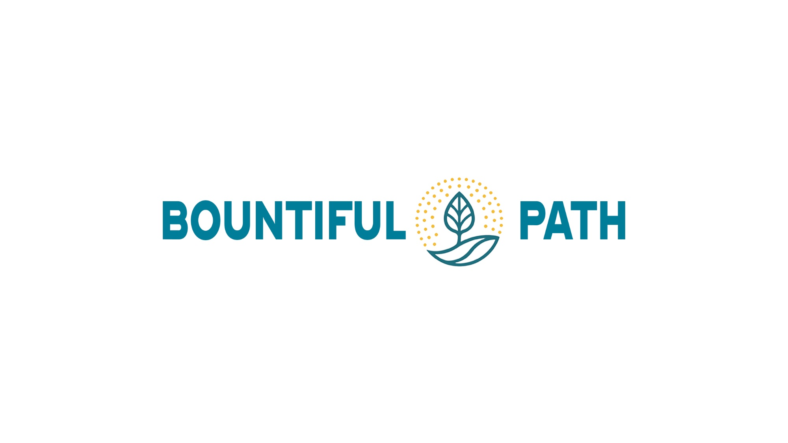
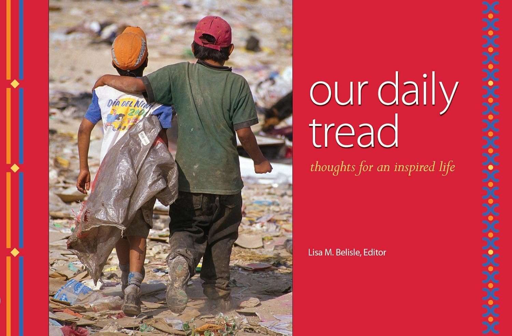

If a line on Substack stayed with you, this is where the writing comes from — and what to read next.

Tools and teachings that take the writing from the page into daily practice. The full catalog and downloads live at bountifulpath.com/companions.

This perpetual calendar of quotations, essays, and photographs was born from a friendship. Hanley Denning, a Bowdoin classmate and Maine native, moved to Guatemala City and founded Safe Passage, a nonprofit dedicated to serving children and families living beside the city garbage dump. Her life’s work there became the foundation for this project.
Lisa brought together a community of supporters, gathering images, words, and stories to create a book that could serve as a fundraiser for Safe Passage. The result was a collection that reflected the breadth of people moved by Hanley’s mission. Safe Passage continues that work today.
Peer-reviewed articles, essays, and other writing from across a career in medicine, leadership, and the arts — published in Doximity Op Med, the Health Care Administration, Leadership and Management Journal, and elsewhere.